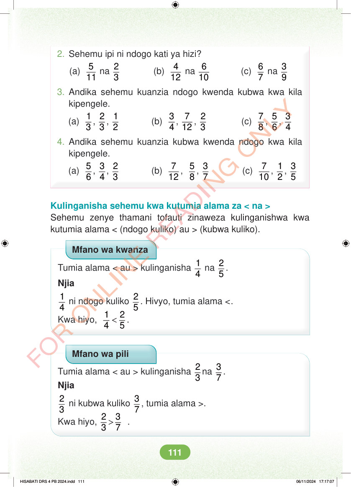

2. Sehemu ipi ni ndogo kati ya hizi? (a) 5 11 na 2 3 (b) 4 12 na 6 10 (c) 6 7 na 3 9 3. Andika sehemu kuanzia ndogo kwenda kubwa kwa kila kipengele. (a) 1 3 , 2 3 , 1 2 (b) 3 4 , 7 12 , 2 3 (c) 7 8 , 5 6 , 3 4 4. Andika sehemu kuanzia kubwa kwenda ndogo kwa kila kipengele. (a) 5 6 , 3 4 , 2 3 (b) 7 12 , 5 8 , 3 7 (c) 7 10 , 1 2 , 3 5 Kulinganisha sehemu kwa kutumia alama za < na > Sehemu zenye thamani tofauti zinaweza kulinganishwa kwa kutumia alama < (ndogo kuliko) au > (kubwa kuliko). Mfano wa kwanza Tumia alama < au > kulinganisha 1 4 na 2 5 . Njia 1 4 ni ndogo kuliko 2 5 . Hivyo, tumia alama <. Kwa hiyo, < 1 2 4 5 . Mfano wa pili Tumia alama < au > kulinganisha 2 3 na 3 7 . Njia 2 3 ni kubwa kuliko 3 7 , tumia alama >. Kwa hiyo, > 2 3 3 7 . HISABATI DRS 4 PB 2024.indd 111 HISABATI DRS 4 PB 2024.indd 111 06/11/2024 17:17:07 06/11/2024 17:17:07